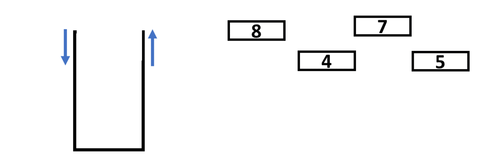
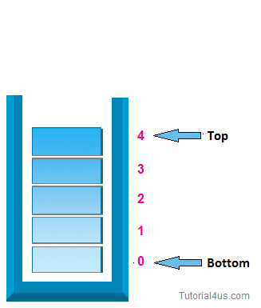

stack and queue
what do you mean by stack?
A stack is a linear data structure in which the insertion of a new element and removal of an existing element takes place at the same end represented as the top of the stack.
To implement the stack, it is required to maintain the pointer to the top of the stack, which is the last element to be inserted because we can access the elements only on the top of the stack.
what do you mean by last in first out(LIFO):
This strategy states that the element that is inserted last will come out first. You can take a pile of plates kept on top of each other as a real-life example. The plate which we put last is on the top and since we remove the plate that is at the top, we can say that the plate that was put last comes out first.

Basic Operations on Stack
In order to make manipulations in a stack, there are certain operations provided to us.
- push() to insert an element into the stack
- pop() to remove an element from the stack
- top() Returns the top element of the stack.
- isEmpty() returns true if stack is empty else false.
- size() returns the size of stack.


Some other Implementation of Stack:
- Queue using Stacks
- Queue using Stacks
- Queue using Stacks
- Queue using Stacks
Postfix
An expression is called the postfix expression if the operator appears in the expression after the operands. Simply of the form (operand1 operand2 operator).
Example : AB+CD-* (Infix : (A+B) * (C-D) )
Prefix
An expression is called the prefix expression if the operator appears in the expression before the operands. Simply of the form (operator operand1 operand2).
Example : *+AB-CD (Infix : (A+B) * (C-D) )
Infix
Infix: An expression is called the Infix expression if the operator appears in between the operands in the expression. Simply of the form (operand1 operator operand2).
Example : (A+B) * (C-D)
Convertions
Infix to postfix
- raverse the infix expression and check if given character is an operator or an operand.
- If it is an operand, then push it into operand stack.
- If it is an operator, then check if priority of current operator is greater than or less than or equal to the operator at top of the stack.
- If priority is greater, then push operator into operator stack.
- pop two operands from operand stack, pop operator from operator stack and push string operator + operand 2 + operand 1 into operand stack. Keep popping from both stacks and pushing result into operand stack until priority of current operator is less than or equal to operator at top of the operator stack.
- If current character is ‘(‘, then push it into operator stack.
- If current character is ‘)’, then check if top of operator stack is opening bracket or not.
- If not pop two operands from operand stack, pop operator from operator stack and push string operator + operand 2 + operand 1 into operand stack.
- Keep popping from both stacks and pushing result into operand stack until top of operator stack is an opening bracket.
- The final prefix expression is present at top of operand stack.
Infix to prefix
- Step 1: Reverse the infix expression. Note while reversing each ‘(‘ will become ‘)’ and each ‘)’ becomes ‘(‘.
- Step 2: Convert the reversed infix expression to “nearly” postfix expression.
While converting to postfix expression, instead of using pop operation to pop operators with greater than or equal precedence, here we will only pop the operators from stack that have greater precedence.
- Step 3: Reverse the postfix expression.